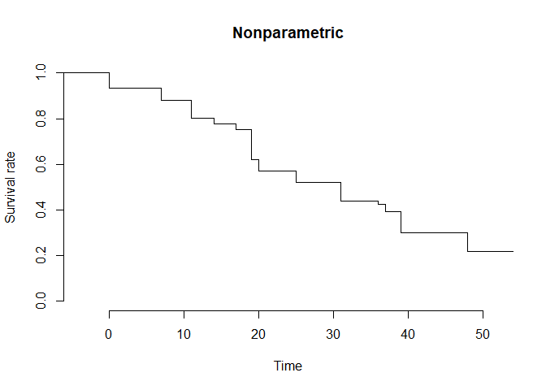

The IntCens package provides non- and semi-parametric methods for analyzing interval-censored data. This includes iterative estimation routines for proportional hazards and proportional odds models, as well as nonparametric maximum likelihood estimation.
Installation
You can install the development version of IntCens from GitHub with:
# install.packages("devtools")
devtools::install_github("lmaowisc/IntCens")Example
The main function for fitting nonparametric, PH, and PO models is icsurvfit(). Below is a basic example:
library(IntCens)
## basic example code
# A dataset containing interval-censored observations and a treatment indicator
# (radiation vs. radiation plus chemotherapy)
data(bcos)
n <- nrow(bcos) # sample size
# Extract the left and right endpoints of the intervals
set.seed(123)
L <- bcos$left + rnorm(n, 0, 0.0001) # add random noise
R <- bcos$right + rnorm(n, 0, 0.0001)
# Covariate (binary)
Z <- as.numeric(bcos$treatment == "RadChem")
# Nonparametric
obj_np <- icsurvfit(L, R)
plot(obj_np, main = "Nonparametric")
# Cox model (PH)
obj_ph <- icsurvfit(L, R, Z, model = "PH")
obj_ph
#>
#> Call:
#> icsurvfit(L = L, R = R, Z = Z, model = "PH")
#>
#> NPMLE of proportional hazards for interval-censored data:
#>
#> ICM algorithm converges in 21 iterations.
#>
#> Maximum Likelihood Estimates for Regression parameters:
#>
#> Estimate StdErr z.value p.value
#> [1,] 0.83568 0.30446 2.7448 0.006055 **
#> ---
#> Signif. codes: 0 '***' 0.001 '**' 0.01 '*' 0.05 '.' 0.1 ' ' 1
# Proportional odds model (PO)
obj_po <- icsurvfit(L, R, Z, model = "PO")
obj_po
#>
#> Call:
#> icsurvfit(L = L, R = R, Z = Z, model = "PO")
#>
#> NPMLE of proportional odds for interval-censored data:
#>
#> ICM algorithm converges in 20 iterations.
#>
#> Maximum Likelihood Estimates for Regression parameters:
#>
#> Estimate StdErr z.value p.value
#> [1,] 0.91123 0.41753 2.1824 0.02908 *
#> ---
#> Signif. codes: 0 '***' 0.001 '**' 0.01 '*' 0.05 '.' 0.1 ' ' 1